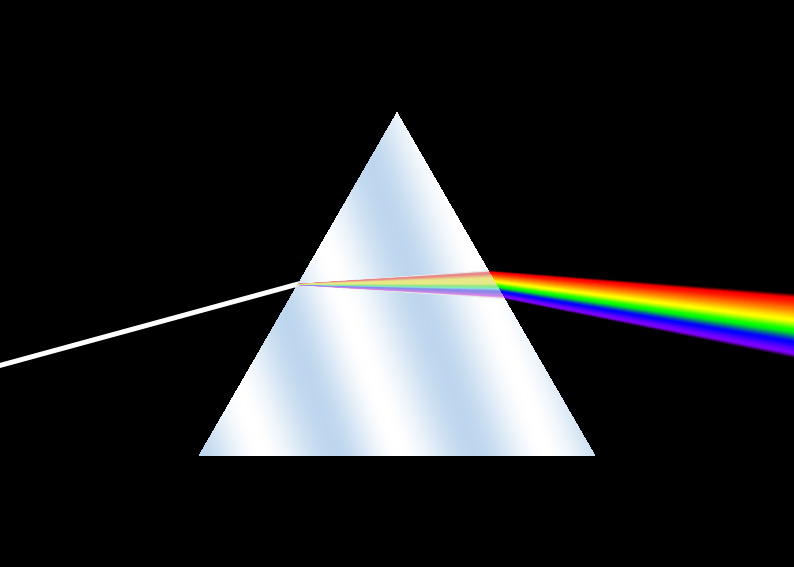

Unternehmensname
Prism Break GmbH
Wir bei prisim break sind eine gruppe studenten welche beim Spielen immer schon fanden das Lincht nicht richtig aussieht. Schatten, reflectionen, nichts ist so wie es eigentlich in echt ist. Also was tun wir? wir nemen die sache sleber in die hand. Wärend dem coden der bewegungen viel uns auf wie viel spass wir bei dem Ganzen hatten, also machten wir ein spiel darauss.
Prism Break GmbH
Wien, Österreich
7 Personen
Interaktive Lernsoftware, Lichtsimulation und digitale Bildung.
Wärend des Codesn viel uns auf wie lustig es ist mit dem licht umzugehen, daher kreirten wir das spiel light Lab , hier können schüler und auch erwachsene sich mit der bewegung, mischung und dem brechen von licht vertraut machen.
Duch das interagieren de lischt lernen die schüler ncht nur wichtige konzepte des lichts aber auch darüber wie farben sich mischen um neue farben zu erstellen. Mit spieeln und Prisims muss eine lichtquelle in eine ziel manifrürt werden. Sollte es mehere ziele geben oder mehrer Licht Quellen kann das licht gemischt und oder aufgeteil werden um alle ziele zu treffen.
Light Lab richtet sich an Lernende, die Grundlagen von Licht, Reflexion, Farben und optischen Effekten verstehen möchten.
Lehrpersonen können Light Lab im Unterricht einsetzen, um physikalische Inhalte anschaulicher und interaktiver zu vermitteln.
Schulen können ein Abo nutzen, um Klassen zu verwalten und die Software im Unterricht regelmäßig einzusetzen.
Entwicklerinnen und Entwickler können die Light Logic Engine als technische Grundlage für realistische Lichtsimulationen verwenden.
Die Wortmarke PRISM BREAK steht für das Unternehmen. Der Name beschreibt den Moment, in dem weißes Licht durch ein Prisma gebrochen und in verschiedene Farben aufgeteilt wird.
Die Bildmarke besteht aus einem abstrakten Prisma-Dreieck mit mehreren farbigen Lichtstrahlen. Sie kann auch ohne Text verwendet werden und ist daher von der Wortmarke unterscheidbar.

Die Bewegungsmarke zeigt einen weißen Lichtstrahl, der auf ein Prisma trifft und sich anschließend in mehrere farbige Strahlen aufteilt. Diese Bewegung steht für Entdeckung, Lernen und technische Simulation.

Für die Marken von Prism Break kommen im Rahmen dieses Studienprojekts insbesondere folgende Nizza-Klassen in Betracht:
Software, herunterladbare Programme, digitale Anwendungen und Computerspiele. Diese Klasse passt zu Light Lab und zur Light Logic Engine.
Online-Handel und geschäftliche Dienstleistungen. Diese Klasse ist für den Webshop und den Vertrieb der Software relevant.
Bildung, Unterricht, Training und Unterhaltung. Diese Klasse passt zum Einsatz von Light Lab als Lernsoftware im Schulunterricht.
Softwareentwicklung, technische Softwaredienstleistungen und Software-as-a-Service. Diese Klasse passt zur Light Logic Engine.